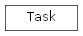

tasks.taskTemplate module¶
tasks.taskTemplate Module¶
| Author: | Dominic |
|---|
Class Inheritance Diagram¶

| Author: | Dominic |
|---|
-
class
tasks.taskTemplate.Task[source]¶ Bases:
objectThe abstract tasks class from which all others inherit
Many general methods for tasks are found only here
-
Name¶ The name of the class used when recording what has been used.
Type: string
-
feedback()[source]¶ Responds to the action from the participant
Returns: feedback Return type: None, int or float
-
next()[source]¶ Produces the next stimulus for the iterator
Returns: - stimulus (None)
- nextValidActions (Tuple of ints) – The list of valid actions that the model can respond with. Set to
None, as they never vary.
Raises: StopIteration
-
params()[source]¶ Returns the parameters of the task as a dictionary
Returns: parameters – The parameters of the task Return type: dict
-
receiveAction(action)[source]¶ Receives the next action from the participant
Parameters: action (int or string) – The action taken by the model
-